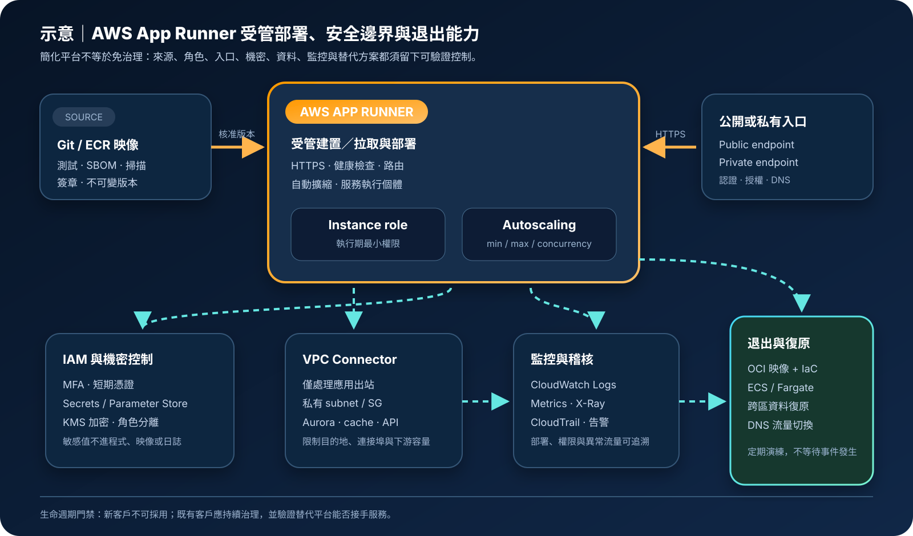

AWS App Runner：受管 Web 服務部署、使用邊界與安全治理
AWS App Runner 可從原始碼或容器映像建立具 HTTPS、自動部署、負載平衡與自動擴縮的 Web 服務。AWS 已自 2026 年 4 月 30 日起停止接受新客戶，既有客戶仍可使用，但不再新增功能；因此評估重點必須同時涵蓋現有服務治理、技術替代與可退出性。
作者：Dr. William｜查閱與發布：2026-10-13
服務定位
AWS App Runner 是面向 HTTP／HTTPS Web 應用程式與 API 的受管應用服務。團隊可連結 GitHub／Bitbucket 原始碼儲存庫，或使用 Amazon ECR／ECR Public 容器映像；App Runner 負責建置或拉取映像、建立執行環境、提供預設網域與 TLS、路由流量、執行健康檢查，並依請求量在設定範圍內擴縮執行個體。
App Runner 的價值是縮短「程式碼到可存取 Web 服務」的整合路徑，不需要直接管理 EC2 主機、ECS cluster、task definition 或負載平衡器。相對地，平台抽象層也限制底層網路、負載平衡、執行環境與部署控制的可調範圍。停止接受新客戶且不再新增功能後，既有系統更需要建立可移植映像、可重建設定與替代平台演練。
核心概念與服務邊界
App Runner 管理的範圍
- 來源連線：從原始碼儲存庫建置，或從 ECR／ECR Public 取得容器映像。
- 部署流程：建立版本、執行部署、健康檢查及流量切換；可設定來源更新後自動部署。
- HTTPS 入口：提供服務網域、TLS 終止與受管請求路由，也可綁定自訂網域。
- 執行與擴縮：依設定的 vCPU、記憶體、最小／最大規模與並行門檻調整執行個體。
- 服務日誌：將部署活動與應用輸出整合至 CloudWatch Logs，並可搭配 X-Ray 追蹤。
- 平台維護：維護服務底層運算、負載平衡與受管 runtime 基礎設施。
客戶仍需明確決策
- 可否採用：先確認帳號在 2026 年 4 月 30 日前已有使用資格；新客戶須改選其他服務。
- 來源信任：程式碼、依賴、基底映像、SBOM、弱點、簽章與部署版本均由團隊治理。
- 角色分離：區分部署者、ECR access role、執行 instance role 與來源連線管理權限。
- 入口與出站：決定 public／private incoming traffic、VPC connector、security groups、DNS 與依賴服務。
- 機密與資料：使用 Secrets Manager／Systems Manager Parameter Store 與 KMS，持久資料放在外部資料服務。
- 退出路徑：保留 OCI 容器、IaC、設定清單、DNS 切換與 ECS／Fargate 等替代平台部署能力。
適合與不適合的使用情境
適合
- 已具 App Runner 使用資格的既有客戶，維護已穩定運作的無狀態網站、HTTP API、後台工具或輕量服務。
- 容器或支援 runtime 的應用需要快速取得 HTTPS、部署、健康檢查、負載平衡與自動擴縮。
- 小型團隊希望降低平台維運面，並能接受 App Runner 提供的網路、部署與執行控制邊界。
- 服務可將資料、session、檔案與工作佇列外部化，單一執行個體可被替換而不造成資料遺失。
- 既有系統正在規劃轉移，需先把來源、映像、機密、監控、成本與依賴盤點標準化。
不適合或不能單獨完成
- 2026 年 4 月 30 日後才首次採用 App Runner 的新 AWS 客戶；官方已停止接受新客戶。
- 需要持續取得新平台功能、長期產品路線承諾或大量新工作負載標準化的策略型平台。
- 需要非 HTTP 協定、長時間批次、排程 worker、特權容器、GPU、特殊 kernel 或直接管理主機。
- 需要精細控制 ALB listener、target group、service mesh、sidecar、部署策略或複雜 VPC 拓撲。
- 需要在 App Runner 執行個體本機保存不可遺失狀態，或假設區域服務會自動提供跨區災難復原。
- 需要以來源 IP 規則保護 private App Runner 服務的設計；private service 無法使用 WAF 來源 IP 規則，應改以 VPC endpoint security group 等網路控制限制來源。
示意故事案例：既有會員查詢 API 的治理與退出準備
以下為示意案例，不代表特定企業或正式部署。 一個既有 App Runner 客戶維護會員查詢 API。程式碼合併後由 CI 建立 OCI 映像，完成測試、SBOM、弱點掃描與簽章，再推送至私有 ECR。App Runner 使用專用 access role 讀取指定 repository，部署時鎖定不可變映像版本，不把浮動的 latest tag 當成稽核依據。
服務 incoming traffic 設為 private，僅讓指定 VPC interface endpoint 進入；若需公開服務，則以正式認證、速率限制與受控前置入口保護。App Runner 透過 VPC connector 從私有 subnets 存取 Aurora，connector security group 只允許必要資料庫連接埠。執行 instance role 僅能讀取指定 Secrets Manager secret 與必要資料資源，人工管理者使用 IAM Identity Center、MFA 與短期憑證。
CloudWatch 收集部署與應用日誌，X-Ray 追蹤請求，CloudTrail 記錄控制面操作。團隊同時把容器、環境變數名稱、機密 ARN、健康檢查、擴縮參數與 DNS 以 IaC 管理，並在 ECS Express Mode／Fargate 建立可重現的替代環境。每季演練以低 TTL DNS 切換到替代平台，避免停止新增功能的服務成為不可退出的單點依賴。

建置與運作流程
- 確認資格與生命週期：驗證帳號是否為既有 App Runner 客戶，記錄停止接受新客戶與不再新增功能對架構、採購及風險接受的影響。
- 定義服務需求：記錄協定、連接埠、流量、啟動時間、vCPU、記憶體、資料分類、區域、RTO、RPO、合規與預期生命週期。
- 選擇來源模式：原始碼模式需治理 repository connection、branch、build command 與 runtime；映像模式需治理 ECR repository、tag／digest、掃描與 access role。
- 建立供應鏈門禁：鎖定依賴與基底映像，完成測試、SBOM、弱點處置、簽章、版本核准與可追溯性。
- 分離 IAM 角色：部署者使用聯合登入、MFA 與短期憑證；ECR access role 只讀指定映像；instance role 只授予應用執行期必要權限。
- 設定建置與啟動：明確指定 runtime、build／start command、port、CPU、記憶體、健康檢查路徑與逾時，避免隱含預設造成不可重現部署。
- 選擇 incoming traffic：公開 API 使用 public endpoint 並配置認證、授權、AWS WAF 與防濫用控制；內部服務使用 private endpoint，並以 VPC interface endpoint security group 限制來源。App Runner private endpoint 不支援 VPC endpoint policy。
- 設定 outgoing traffic：需要存取私有 VPC 資源時建立 VPC connector，選擇私有 subnets 與專用 security group；分辨 connector 只影響應用出站，不會自動把入口改成私有。
- 保護機密：以 Secrets Manager 或 Parameter Store 參照敏感設定並使用 KMS；不得把敏感值寫入原始碼、映像、建置參數、一般環境變數或日誌。
- 設定擴縮：依並行請求、最小／最大 size、冷啟動、下游容量與預算測試 autoscaling configuration，不把最大值設成未經容量驗證的數字。
- 建立觀測性：設定 CloudWatch Logs 保留、指標、告警與 dashboard，啟用 X-Ray 或應用追蹤，集中 CloudTrail 並監控部署、設定與角色變更。
- 驗證部署與故障：測試失敗映像、健康檢查、突發流量、資料庫限流、VPC connector、secret 輪替、來源中斷與回復程序。
- 建立退出方案：以可移植容器與 IaC 在 ECS Express Mode、ECS on Fargate 或其他核准平台重建，演練資料、機密、DNS、憑證及流量切換。
成本、可用性與維運考量
App Runner 的主要費用來自配置後保留的記憶體、處理請求時的 vCPU／記憶體運算、來源建置，以及資料傳輸等相關服務。暫停服務可停止運算費用，但仍可能產生已配置記憶體或其他依賴資源費用；實際計費維度與價格應以部署區域及官方 pricing page 為準。VPC interface endpoints、NAT Gateway、ECR、CloudWatch、X-Ray、KMS、Secrets Manager、Route 53、CloudFront 與資料庫均可能另行計費。
Autoscaling configuration 的最小規模影響待命成本與回應延遲，最大規模必須與資料庫連線、第三方 API、配額與預算共同設計。原始碼建置會增加部署時間與建置費；容器映像模式可把建置門禁移至既有 CI，但仍需支付 ECR 儲存、掃描及傳輸相關費用。
App Runner 是區域型服務。平台管理區域內執行與路由，不代表應用已達成跨區復原。正式服務應外部化狀態、保留映像與 IaC、備份資料、規劃 KMS 與 secret 跨區處理，並實際演練在替代區域與替代運算平台重建。停止新增功能使技術債與供應商鎖定風險上升，維運計畫應包含遷移期限與驗證里程碑。
AWS App Runner 特有資安風險與控制
- 服務生命週期誤判：資產清冊標示停止接受新客戶與不再新增功能，建立風險擁有者、遷移門檻、替代平台與完成日期。
- 自動部署擴大供應鏈風險：保護 branch、強制 review 與簽章、限制 repository connection，正式環境採核准版本，避免未經門禁的 commit 自動上線。
- ECR access role 過權：限制 repository、動作與條件，不讓 App Runner 讀取整個 registry 或不相關映像。
- Instance role 過權：僅允許應用存取指定資源；用 Access Analyzer、CloudTrail 與服務使用證據持續縮減權限。
- 公開預設網域暴露：盤點 default domain 與 custom domain，未使用的入口應關閉或受控；應用層落實認證、授權、速率限制與輸入驗證。
- 私有入口認知錯誤：private incoming traffic 需透過 VPC interface endpoint；VPC connector 僅處理服務出站，不能代替 private endpoint。
- Private endpoint policy 誤用：App Runner private endpoint 不支援 VPC endpoint policy；應以 endpoint security group、subnet 路由、DNS 與身分控制縮小存取面。
- VPC connector 出站過寬：選用專用 security group，只允許必要目的地與連接埠；資料庫 security group 僅接受 connector security group。
- 首次 VPC 出站延遲：新 connector 建立可能需要額外時間，部署與健康檢查門檻須納入測試，不把初始化延遲誤判為應用失效。
- 機密以明文環境變數管理：使用 Secrets Manager／Parameter Store 參照及 KMS，限制讀取角色；輪替後確認執行個體取得新版本並撤銷舊權限。
- 建置與應用日誌洩漏：禁止輸出敏感值，設定 CloudWatch retention、KMS、存取控制、資料遮罩與跨帳號集中保存。
- 自訂網域接管風險：解除綁定或刪除服務時同步移除 DNS 記錄，持續監控憑證驗證與懸空 CNAME。
- 擴縮造成下游耗盡：設定最大規模、連線池、限流、逾時、重試退避與熔斷，對 Aurora、外部 API 與 secret 讀取量做容量測試。
- 不可移植設定：把 port、健康檢查、環境變數名稱、IAM、網路與 DNS 以 IaC 管理；定期在 ECS／Fargate 等替代平台重建。
- 控制面證據不足：以 CloudTrail 追蹤 App Runner API 與角色變更，CloudWatch／X-Ray 補足執行期訊號，對部署失敗、異常流量與權限拒絕告警。
共同責任邊界
AWS 負責 App Runner 服務底層基礎設施、受管運算、路由、平台維護與服務可用性。客戶負責帳號治理、來源程式碼、容器映像、第三方依賴、IAM、應用漏洞、認證授權、資料分類、公開存取、VPC 設計、KMS、機密、日誌內容、成本、備份、復原、替代平台與法規符合性。
客戶須落實 IAM 最小權限、管理者 MFA 與短期憑證、公開／私有入口審查、網路隔離與受控出站、KMS 加密、Secrets Manager／Parameter Store、CloudTrail／CloudWatch、資料備份及跨區重建。App Runner 提供受管平台，不會判斷程式碼是否安全、映像是否可信、資料能否公開、角色是否過權，或停止新增功能後的服務是否仍符合組織技術策略。
上線與維運可執行檢查清單
- □ 已確認帳號具 App Runner 既有客戶資格；新客戶未把此服務列為可採用方案。
- □ 已記錄停止接受新客戶、不再新增功能、風險擁有者、遷移觸發條件與替代平台。
- □ 已確認工作負載為適合的 HTTP／HTTPS 無狀態 Web 服務，而非批次、非 HTTP 或特殊主機需求。
- □ 管理者使用聯合登入、MFA 與短期憑證；root 不用於日常操作。
- □ Repository connection、ECR access role、instance role 與部署者權限已分離並採最小權限。
- □ 程式碼與映像已完成 branch protection、測試、SBOM、弱點掃描、簽章、版本核准與追溯。
- □ 正式部署使用不可變版本或 digest，未以浮動 latest tag 作為唯一版本依據。
- □ Build／start command、port、runtime、CPU、記憶體與健康檢查已明確設定並可重現。
- □ Public／private incoming traffic 已按資料風險選擇，default domain 與 custom domain 均已盤點。
- □ Private service 的 VPC interface endpoint、DNS 與 security group 已驗證，且未假設可使用不受支援的 VPC endpoint policy。
- □ VPC connector 使用私有 subnets 與專用 security group，只能存取核准的私有依賴。
- □ 已確認 VPC connector 只影響 outgoing traffic，未把它誤當成 private incoming traffic 控制。
- □ 機密存於 Secrets Manager／Parameter Store 並使用 KMS，未出現在原始碼、映像、建置輸出或日誌。
- □ Secret 輪替、應用重新部署／重啟與舊憑證撤銷流程已測試。
- □ Autoscaling 的並行門檻、min／max size、冷啟動、下游容量與預算已負載測試。
- □ CloudWatch Logs retention、KMS、指標、告警、dashboard、X-Ray 與集中式 CloudTrail 已設定。
- □ 自訂網域、TLS、DNS 驗證與服務刪除後的記錄清理程序已建立。
- □ 持久資料已外部化，備份、PITR、跨區複寫與還原演練符合 RTO／RPO。
- □ 已盤點配置記憶體、active compute、build、endpoint、NAT、日誌、追蹤、KMS、機密與資料傳輸成本。
- □ OCI 映像、IaC、設定、IAM、Secrets、DNS 與監控可在 ECS Express Mode／Fargate 等替代平台重建。
- □ 已實際演練替代區域與替代平台的部署、資料復原及 DNS 切換，並記錄差距與完成期限。
AWS 官方一手來源
- AWS App Runner product page（查閱：2026-10-13）
- What is AWS App Runner?（查閱：2026-10-13）
- App Runner service based on a source image（查閱：2026-10-13）
- App Runner service based on source code（查閱：2026-10-13）
- Manage App Runner automatic scaling（查閱：2026-10-13）
- Enabling private endpoint for incoming traffic（查閱：2026-10-13）
- Enabling VPC access for outgoing traffic（查閱：2026-10-13）
- Manage AWS WAF web ACLs for an App Runner service（查閱：2026-10-13）
- Referencing environment variables and secrets（查閱：2026-10-13）
- Identity and access management for App Runner（查閱：2026-10-13）
- Data protection in App Runner（查閱：2026-10-13）
- Monitoring App Runner with CloudWatch（查閱：2026-10-13）
- Logging App Runner API calls with CloudTrail（查閱：2026-10-13）
- AWS App Runner pricing（查閱：2026-10-13）
- AWS Well-Architected Security Pillar｜Shared responsibility（查閱：2026-10-13）
內容說明
本文依查閱日可用的 AWS 官方文件整理，作為基礎學習、既有服務治理與遷移討論材料；實際部署仍須依最新帳號資格、區域支援、服務狀態、runtime、配額、價格、網路、來源供應鏈、資料分類、合規要求與復原演練結果調整。